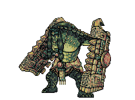
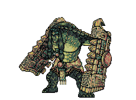
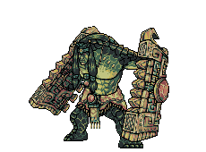
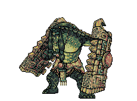
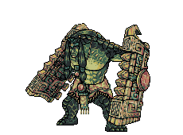
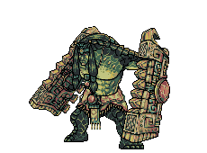

Bakugou viu que não adiantou usar seu poder. Então decide criar uma nova estratégia.
1- Ele se esconde entre umas rochas, fazendo com que o inimigo o procure.
2- Ele ataca o inimigo de imediato.